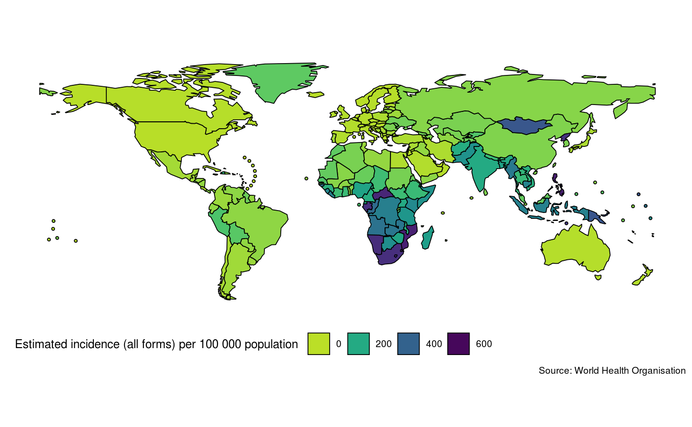

Map measures of TB burden by country by specifying a metric from the TB burden data. Specify a country or vector of countries in order to map them (the default is to map all countries). Various other options are available for tuning the plot further.
map_tb_burden(df = NULL, dict = NULL, metric = "e_inc_100k", metric_label = NULL, fill_var_type = NULL, countries = NULL, compare_to_region = FALSE, facet = NULL, legend = "bottom", year = NULL, annual_change = FALSE, trans = "identity", interactive = FALSE, download_data = TRUE, save = TRUE, viridis_palette = "viridis", viridis_direction = -1, viridis_end = 0.9, verbose = TRUE, ...)
| df | Dataframe of TB burden data, as sourced by |
|---|---|
| dict | A tibble of the data dictionary. See |
| metric | Character string specifying the metric to plot |
| metric_label | Character string specifying the metric label to use. |
| fill_var_type | A character string, defaults to |
| countries | A character string specifying the countries to target. |
| compare_to_region | Logical, defaults to |
| facet | Character string, the name of the variable to facet by. |
| legend | Character string, defaults to |
| year | Numeric, indicating the year of data to map. Defaults to the latest year in the data.
If |
| annual_change | Logical, defaults to |
| trans | A character string specifying the transform to use on the specified metric. Defaults to no
transform ("identity"). Other options include log scaling ("log") and log base 10 scaling
("log10"). For a complete list of options see |
| interactive | Logical, defaults to |
| download_data | Logical, defaults to |
| save | Logical, should the data be saved for reuse during the current R session. Defaults to
|
| viridis_palette | Character string indicating the |
| viridis_direction | Numeric, indicating the direction for the colour palette (1 or -1), defaults to -1.
See |
| viridis_end | Numeric between 0 and 1, defaults to 0.9. The end point of the viridis scale to use.
#' See |
| verbose | Logical, defaults to |
| ... | Additional arguments to pass to |
A plot of TB Incidence Rates by Country
plot_tb_burden plot_tb_burden_overview get_tb_burden search_data_dict
## Map raw incidence rates map_tb_burden()#>#>#>#>#># NOT RUN { #' ## Map raw incidence rates map_tb_burden(year = 2014:2017, facet = "year") ## Map log10 scaled incidence rates map_tb_burden(trans = "log10") ## Map percentage annual change in incidence rates map_tb_burden(annual_change = TRUE) ## Find variables relating to mortality in the WHO dataset search_data_dict(def = "mortality") ## Map mortality rates (exc HIV) - without progress messages map_tb_burden(metric = "e_mort_exc_tbhiv_100k", verbose = FALSE) ## Can also use a discrete metric if one is available map_tb_burden(metric = "g_whoregion", metric_label = "WHO world region") # }